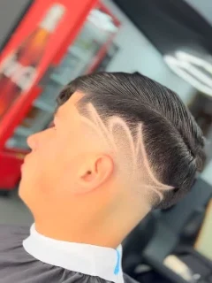
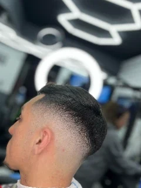
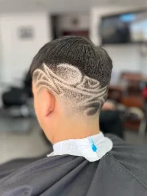
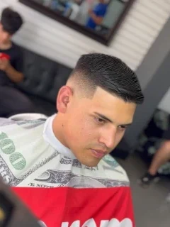

01
Barbería Imperio · Llolleo, San Antonio
Degradados, tijera y diseños de cabello.
Elige tu referencia. Conversemos tu próximo corte.
Por Instagram. La barbería confirma tu disponibilidad.
LLOLLEO / EL OFICIO EN CADA LÍNEA

El trazo hace tu estilo.
CÓMO CONSULTAR
Escríbenos por Instagram
@barberia._imperio
El trabajo habla
Una selección del portafolio de Imperio.
Escoge una referencia para tu consulta.



Selección de imágenes existentes. Propuesta sujeta a originales y permisos de publicación.
Encuentra tu referencia
Categorías referenciales. Servicios, precios y duración por confirmar con la barbería.
Cortes personalizados, líneas definidas y terminaciones cuidadas.
Transiciones precisas y distintas alturas según el estilo buscado.
Líneas y patrones inspirados en los trabajos reales de Imperio.
* Catálogo referencial para la demo. No implica disponibilidad real ni constituye una lista oficial de precios.
Esta demostración utiliza reglas sencillas, no inteligencia artificial ni análisis de imágenes. No solicita fotografías.
El siguiente paso
Envía tu referencia y cuándo te gustaría visitarnos.
La hora se acuerda directamente con la barbería.
Esta propuesta no confirma ni registra reservas.
Prepara un mensaje con tus preferencias. Los horarios son referenciales y no indican disponibilidad real.

LAS MANOS DETRÁS DEL ESTILO
Muy pronto cada barbero podrá tener su propio perfil, galería de trabajos y disponibilidad. No publicaremos nombres, fotografías de perfil o especialidades sin confirmarlos.